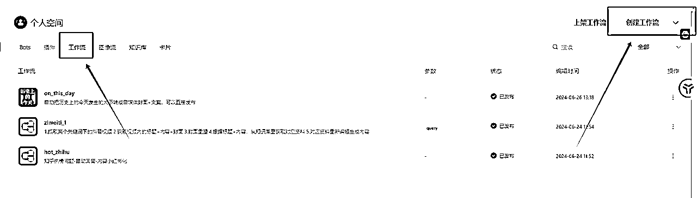

来源：https://tcnmgv0907ip.feishu.cn/docx/G82ndeRyeoofSVxiHhzcjPDBnzh
小红书看到这一类账号，发现这种作品的背景和内容排版都是固定，变的只有信息，是可以通过ai自动化和批量化的
所以模仿这类账号想到了做一个历史上的今天发生了什么重大事件
找到信源-筛选信息-封面生成-内容生成-发布
2.1.1找到信源
建议可以直接问GPT或者直接百度都有现成的，这里我找到了本项目相关的两个信源
国内：http://www.lishi365.cn/
国外：https://www.onthisday.com/
2.2.2制作爬虫
coze上可以直接用别人做好的插件，也可以自己写一个，这里我让GPT帮我写了插件（注意提示词要强调你的代码需要在coze.cn上运行，这样出的结果更容易跑）
我已经写好了，你可以在插件商店了直接搜索《历史上的今天》即可使用
这里附上代码，里面的url可以切换为你需要爬取的网站，如果爬取不成功可能是页面元素不一样，可以具体再问GPT解决
import requests
from bs4 import BeautifulSoup
import json
import logging
# 配置日志记录
logging.basicConfig(level=logging.INFO)
def fetch_event_titles(url):
try:
# 发起HTTP GET请求
response = requests.get(url)
response.encoding = 'utf-8' # 确保正确的编码
# 解析网页内容
soup = BeautifulSoup(response.text, 'html.parser')
# 查找所有符合条件的a标签
event_links = soup.find_all('a', href=True, title=True)
# 提取事件标题
events = []
for link in event_links:
event_title = link['title']
events.append(event_title)
return events
except Exception as e:
logging.error(f"Error fetching event titles: {e}")
return []
def handler(event, context=None):
try:
# 目标网站URL
url = 'http://www.lishi365.cn/'
# 获取事件标题列表
event_titles = fetch_event_titles(url)
# 将列表转换为字符串
event_titles_str = json.dumps(event_titles, ensure_ascii=False)
# 返回结果
return {
'statusCode': 200,
'body': event_titles_str
}
except Exception as e:
logging.error(f"Error in handler: {e}")
return {
'statusCode': 500,
'body': f"Error: {e}"
}

创建一个工作流，然后把你写好的插件放进去
然后可以测试一下这个节点是否能正常运行
你会发现他抓取的很多内容，其中很多内容没有什么价值，所以可以导入一个大模型节点，来筛选出比较重要的内容，同时让他对内容做出评价拓展成你自媒体要发布的素材
注意：提示词里一定要附上变量名，比如这里的{input}，这样模型才知道你要加工的内容是什么
内容导出后会发现一个问题，你输出的内容是文字，里面有三个要素时间、标题和评价，因为下一个节点需要我们把时间、标题做成图片，评价做成小红书内容，所以这里导入了一个代码模块，来把输出的内容转化成三个变量给下一个节点
附上代码
import re
def main(*args):
def parse_content(text):
# 使用正则表达式提取日期、标题和内容
date_match = re.search(r'时间：(.*?)\n', text)
title_match = re.search(r'标题：(.*?)\n', text)
content_match = re.search(r'评价：(.*)', text, re.DOTALL)
# 提取并清理匹配到的内容
day = date_match.group(1).strip() if date_match else None
title = title_match.group(1).strip() if title_match else None
content = content_match.group(1).strip() if content_match else None
return day, title, content
# 检查传入的参数类型
print(f"Arguments received: {args}")
if len(args) == 1:
arg = args[0]
print(f"Single argument type: {type(arg).__name__}, value: {arg}")
# 打印arg的所有属性及其值
for attribute in dir(arg):
try:
print(f"Attribute {attribute}: {getattr(arg, attribute)}")
except Exception as e:
print(f"Could not access attribute {attribute}: {e}")
if isinstance(arg, str):
text = arg
elif hasattr(arg, 'content'):
content = getattr(arg, 'content')
print(f"Content attribute type: {type(content).__name__}, value: {content}")
if isinstance(content, str):
text = content
elif isinstance(content, dict) and 'params' in content and 'input' in content['params']:
text = content['params']['input']
else:
print(f"The 'content' attribute exists but is not a string. It is of type {type(content).__name__} with value: {content}")
text = f"Error: Invalid content type {type(content).__name__} with value: {content}"
else:
print(f"Input must be a string or an object with a 'content' attribute, but got {type(arg).__name__}")
text = "Error: Invalid input type"
else:
print(f"Input must be a single argument, but got {len(args)} arguments")
text = "Error: Multiple arguments"
if "Error" not in text:
# 解析内容
day, title, content = parse_content(text)
# 输出结果作为字典返回
return {
"day": day,
"title": title,
"content": content
}
else:
return {"error": text}
# 示例用户输入内容
class Args:
def __init__(self, content):
self.content = content
user_input = Args({"params": {"input": """时间：1951 年 6 月 25 日
标题：世界首次播出彩色电视节目
评价：
1951 年 6 月 25 日，世界首次播出彩色电视节目，这是电视发展史上的一个重要里程碑。
这一事件具有多方面的重大意义和深远影响。从技术层面来看，彩色电视节目的播出标志着电视技术的一次重大突破和创新。它使得电视画面从单调的黑白变得丰富多彩，极大地提升了观众的视觉体验，为电视行业的发展注入了新的活力。
在文化传播方面，彩色电视节目丰富了信息传递的方式和效果。生动鲜艳的色彩能够更准确、更生动地展现各种文化内容，包括艺术、历史、自然科学等，促进了不同文化之间的交流与融合。
对于娱乐产业来说，彩色电视的出现为电视剧、电影、综艺节目等带来了全新的发展机遇。更逼真的画面使得观众更容易沉浸其中，推动了娱乐产业的繁荣。
在经济领域，彩色电视的播出带动了相关产业的发展，如电视制造、广告业等。消费者对于彩色电视的需求增加，促使制造商不断改进技术、提高产量，从而推动了相关产业的升级和发展。广告商也能够利用更吸引人的彩色画面来推广产品和服务，增加广告的效果和收益。
总的来说，1951 年 6 月 25 日世界首次播出彩色电视节目是一个具有划时代意义的事件，它不仅改变了人们获取信息和娱乐的方式，还对技术、文化、经济等多个领域产生了广泛而深远的影响，为后来的电视发展和社会进步奠定了重要基础。"""}})
# 打印输入类型和值进行调试
print(f"Input type before main: {type(user_input).__name__}, Input value before main: {user_input.content}")
# 调用main函数并捕获返回值
result = main(user_input)
# 打印返回值
print(result)
然后把content内容输出给下一个小红书模型，让他加工
工作流里没有直接加工图像，所以这里我是制作了一个图像流，来加工图片
你会发现这里的输入day,title就是之前我们工作流输出的变量，如果你的有变动，这里也是需要同步的，保证你上一个节点输出的内容能被下一个节点接收
然后这里有两个加工节点，第一个是给图片加时间，第二个是给图片加事件，你只要提前做好一个图片背景，上传给第一个加工节点，然后他输出的图片在输入给第二个加工的节点即可
注意：这里的参数是调节文字的元素的，上面都有说明，可以自行调节
图像流做好了之后就可以放到之前的工作流里
最后就会输出一张图片和一段内容，就可以直接复制出来发布了

最后是完整的工作流
这个工作流是一个比较基础的工作流，可以作为一个模板
变量就是信源和封面背景，自定义之后就可以快速形成一个类型的账号，一个账号不用1分钟
提供几个方向
1.刚刚发生了什么
2.信息查
3.当地新闻
4.副业信息
交流：nmjy1224